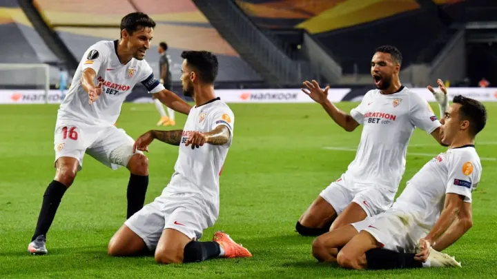
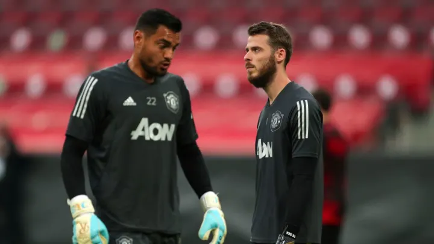
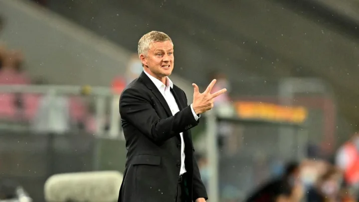

เก็บตกประเด็นหลังเกม! แมนฯ ยูไนเต็ด พ่าย เซบีย่า 1-2 จอดป้ายศึกยูโรปาลีก
"ปีศาจแดง" แมนเชสเตอร์ ยูไนเต็ด ต้องยุติเส้นทางเพียงแค่นี้หลังเป็นฝ่ายโดน เซบีย่า รัวแซงเอาชนะ 2-1 ทั้งที่เป็นฝ่ายออกนำก่อนตั้งแต่ช่วงต้นเกมแต่สุดท้ายคุมสถานการณ์ไว้ไม่ได้ทำให้ ต้องกระเด็นตกรอบ ฟุตบอล ยูโรปา ลีก รอบรองชนะเลิศ ที่สนาม ไรน์ เอเนอร์กี้ สตาดิโอน, โคโลญจน์ เมื่อคืนวันอาทิตย์ที่ 16 สิงหาคม ที่ผ่านมา
1. ครึ่งชั่วโมงแรกกับแผนการที่แทบไม่เคยได้ผล
แฟน ๆ แมนฯ ยูไนเต็ด หลายคนคงจะทราบดีถึงแนวทางการเล่นของ ปีศาจแดง ภายใต้การคุมทีมของ โอเล กุนนาร์ โซลชา ในฤดูกาลนี้ดีว่า ว่าหากพวกเขาสามารถขึ้นนำคู่แข่งได้ก่อน หลังจากนั้นเหล่าบรรดาผู้เล่นมักจะผ่อนเกมลงและถอยลงมาแพ็คเกมรับรอสวนกลับในทันที ซึ่งมักจะใช้ได้ผลกับทีมเล็กที่เกมรุกไม่ได้อันตรายมากนักในช่วงที่ผ่านมา
เช่นเดียวกับในเกมนี้ ที่พวกเขานำเร็วตั้งแต่ช่วง 10 นาทีแรก แต่แทนที่บุกกดดันคู่แข้งต่อเนื่องเพื่อเอาประตูนำห่างในขณะที่คู่แข่งยังตั้งเกมของตัวเองไม่ได้ แต่กลับถอยลงมาตั้งรับรอสวนกลับจนโดนตีเสมอในที่สุด ซึ่งก็ไม่รู้ว่า โซลชา คิดอะไรอยู่ ทั้งที่เกมรับก็ไม่ใช่จุดเด่นของทีมอยู่แล้ว มันจึงกลายเป็นการเล่นเพื่อรอโดนยิงเท่านั้น เพราะนี่คือ เซบีย่า หนึ่งในทีมเกรดเอของยุโรป ไม่ใช่ทีมไก่การองบ่อนที่พวกเขาจะมาอุดหวังปิดสกอร์ตั้งแต่ 10 นาทีแรกแบบนี้
2. โรเมโร : ผมทำผิดอะไร !
อีกหนึ่งประเด็นร้อนแรงสุด ๆ ในเกมนี้ก็คือการที่ โอเล กุนนาร์ โซลชา แสดงออกถึงความไม่มั่นใจในตัว เซร์คิโอ โรเมโร อีกครั้งด้วยการหักดิบส่ง ดาบิด เดเคอา ลงเฝ้าเสาทั้งที่ โรเมโร ทำหน้าที่เป็นมือหนึ่งในรายการนี้มาโดยตลอด
แน่นอนว่า เด เคอา ไม่มีได้มีข้อผิดพลาดส่วนตัวในวันนี้ แต่การทำแบบนี้ใคร ๆ ก็ต้องคิดว่ามันไม่ให้เกียรติกันแบบชัดเจน ทั้งที่พาทีมฝ่าฟันแทบตายกว่าจะมาถึงจุดนี้ได้ แต่พอถึงเกมสำคัญ ๆ กลับเปลี่ยนคนอื่นที่ก็แทบไม่ได้น่าไว้ใจอะไรได้ด้วยซ้ำในชั่วโมงนี้ลงมาทำหน้าที่แทนหน้าตาเฉย โดยนี่ก็ไม่ใช่เกมแรกที่เกิดเหตุการณ์แบบนี้ขึ้น เพราะเกม เอฟเอ คัพ รอบ 4 ทีมสุดท้าย โซลชาก็เคยทำแบบนี้มาแล้วและสุดท้ายก็พ่ายตกรอบไปเพราะความผิดพลาดของ ดาบิด เด เคอา ในวันนั้น
3. สถิติหลังเกม
เซบีย่า ทำสถิติเป็นทีมที่เข้าสู่รอบชิงชนะเลิศในรายการนี้ได้มากที่สุด (6 ครั้ง)
แมนเชสเตอร์ ยูไนเต็ด ตกรอบในฟุตบอลยุโรปด้วยน้ำมือของทีมจาก ลาลีกา มาแล้ว 3 ปี ติดต่อกัน (พ่าย เซบีย่า ในแชมเปี้ยนส์ลีก รอบ 16 ทีมเมื่อปี 2017/18 - พ่าย บาร์เซโลน่า ในแชมเปี้ยนส์ลีก รอบ 8 ทีมปี 2018/19 และ แพ้ เซบีย่า อีกครั้งใน ยูโรปาลีก รอบ 4 ทีมเมื่อคืนวาน)
หากนับตั้งแต่เดือน กุมภาพันธ์ เซบีญา ไม่แพ้ใครไปแล้วถึง 20 นัดรวมทุกรายการ โดยช่วงเวลาเดียวกันนี้มีเพียง 3 ทีมที่ไม่แพ้ใครติดต่อกันเกิน 20 เกมใน 5 ลีกดังของยุโรปนั่นคือ บาเยิร์น มิวนิค, ปารีส แซงต์ แชร์กแมง และ เรอัล มาดริด
สองเกมหลังสุดในรายการนี้ (พบกับ เอฟซี โอเปนเฮเก้น และ เซบีย่า) แมนฯ ยูไนเต็ด สร้างสรรค์โอกาสยิงได้รวมกัยถึงถึง 46 ครั้ง ยิงเข้ากรอบ 21 ครั้ง แต่สองประตูที่พวกเขาทำได้มาจากลูกจุดโทษทั้งหมด
ปีศาจแดง ได้ลูกจุดโทษรวมทุกรายการในฤดูกาลนี้ถึง 22 ครั้ง มากที่สุดตลอด 4 ปีในบรรดาทุกทีมใน 5 ลีกดังของยุโรป นับตั้งแต่ บาร์เซโลนา เคยทำสถิติเอาไว้ที่ 22 ครั้งเท่ากันในปี 2015/16
หากนับตั้งแต่เดือนกุมภาพันธ์เป็นต้นมา บรูโน เฟอร์นันเดส มีส่วนกับการทำประตูไปแล้วถึง 20 ครั้ง (ยิง 12 แอสซิสต์ 8) มาที่สุดเป็นอันดับ 3 ในห้าลีกดังของยุโรปเป็นรองเพียง โรเบิร์ต เลวานดอฟสกี้ (28 ครั้ง) และ ลิโอเนล เมสซี (27 ครั้ง)
นอกจากนี้ บรูโน เฟอร์นันเดส ยังไม่พลาดจุดโทษเลยแม้แต่ลูกเดียวในฤดูกาลนี้ (14 ครั้ง) โดยเป็นการยิงให้กับ สปอร์ติง ลิสบอน 6 ประตู และ แมนฯ ยูไนเต็ด 8 ประตูด้วยกัน